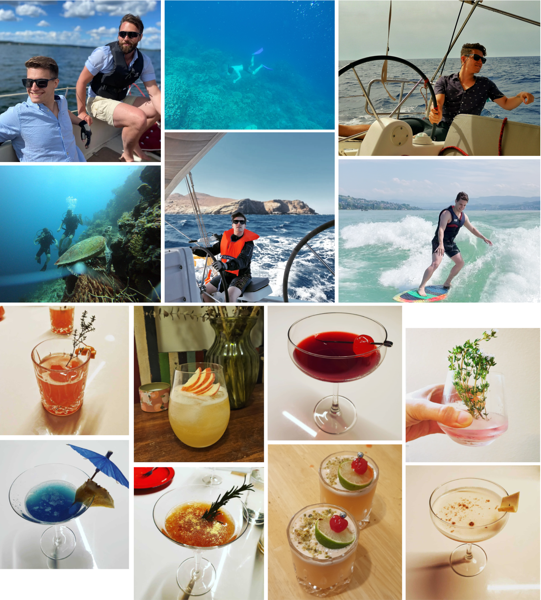

About Me
A brief overview of my academic bio, full CV, selected awards, recognitions, and invited talks, as well as personal interests.
Biography
Lukas Rosenberger Schmid (formerly Lukas Schmid) is a Tenure-Track Professor of Machine Intelligence at UTN. Before that, he was a Research Scientist and Postdoctoral Fellow at the MIT SPARK Lab led by Prof. Luca Carlone, and a Postdoctoral Researcher at the Autonomous Systems Lab (ASL) led by Prof. Roland Siegwart at ETH Zürich. He earned his PhD in 2022 from ASL at ETHZ, where he also obtained his M.Sc. in Robotics, Systems, and Control (RSC) in 2019 and was a visiting researcher at the Microsoft Spatial AI Lab led by Prof. Marc Pollefeys. in 2022. His work has been recognized by several honors, including RSS Pioneers 2025, NOKOV New Generation Star at IROS 2025, the RSS Outstanding Systems Paper Award 2024, two ETH Medals for outstanding PhD and M.Sc. Theses, the Willi Studer Prize for the best graduate of the year at ETHZ, the first place in the 2024 Hilti SLAM challenge, and a Swiss National Science Foundation (SNSF) Postdoc Fellowship. His research focuses on embodied spatio-temporal AI for human-centric robot autonomy. This includes research on scene representations and abstraction, on detection, prediction, and understanding of moving and changing entities, active perception and information gathering, as well as lifelong learning for continuous adaptation to the robot environment, embodiment, task, and human preference.
Awards and Recognitions
Selected awards and recognitions:- Outstanding Reviewer Award at IEEE Int. Conf. on Robotics and Automation(ICRA), 2026.
- Outstanding Reviewer at IEEE/CVF Conf. on Computer Vision and Pattern Recognition (CVPR), 2026.
- NOKOV New Generation Star at IEEE/RSJ Int. Conf. on Robotics and intelligent Systems (IROS), 2025.
- RSS: Pioneer at Robotics: Science and Systems (RSS), 2025.
- Outstanding Systems Paper Award at Robotics: Science and Systems (RSS) for our work on Khronos, 2024.
- First Place in the "Nothing Stands Still" 2024 Hilti SLAM challenge on spatio-temporal registration, 2024.
- ETH Medal for Outstanding PhD Thesis awarded by ETH Zürich for the outstanding research of my thesis "Robust Active Perception and Volumetric Mapping in Unknown Changing Environments", 2023.
- Swiss National Science Foundation Postdoc-Mobility Fellowship for the project "Robust Robotic Scene Understanding in Complex, Changing Environments using 3D Dynamic Scene Graphs", 2022.
- Willi Studer Prize awarded by ETH Zürich for the best M.Sc. graduate, 2020.
- ETH Medal for Outstanding Master Thesis awarded by ETH Zürich for my thesis "Active Path Planning for 3D Reconstruction with UAVs", 2020.
Invited Talks
If you would like me to give a talk please reach out to lukas.schmid@utn.edu! Recent talks:
Personal Interests
Besides my work, I am a passionate classical pianist (four times winner of the 1st prize at the Thurgau Youth Music Competition, three times with award), but also used to play in piano trios and jazz ensembles.

I enjoy team sports such as volleyball, especially beach volleyball during summer, working out, and running. I also used to play Tennis and spent many years doing Wing Chun Kung Fu.
I love exploring, tasting, and presenting wines and making cocktails (WSET Level 2 Award in Wines, WSET Level 2 Award in Spirits, both passed with distinction), and sharing these experiences with others.
For recreation, I relish various water sports such as scuba diving (PADI Advanced Open Water Diver), sailing (Swiss Yachting Certificate, MIT provisional, 420, laser, windsurf, and lynx catboat rating) as well as wave, wake, and wind surfing.